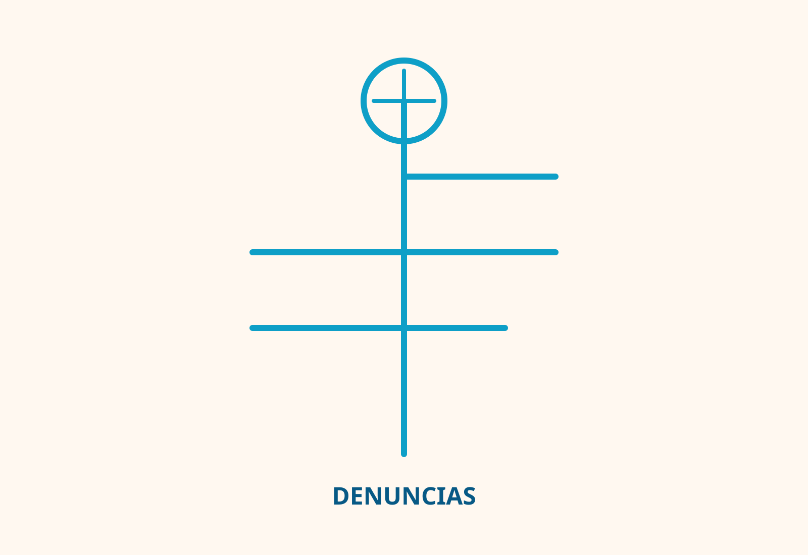

saludrcartes · Registro clínico personal
Denuncias CGR — serie de escritos de abril de 2026 · Roberto Carlos Cartes Jiménez · Impreso:
Denuncias CGR — serie de escritos de abril de 2026 · Roberto Carlos Cartes Jiménez · Impreso:
Expediente y respaldo 11
Denuncias CGR — serie de escritos de abril de 2026
Serie de presentaciones preparadas para la Contraloría General durante abril de 2026. Cada escrito desarrolla un eje distinto: la paralización del sumario 2478, la retención de respuestas, la obstrucción del reclamo 3180597, la falta de notificación y la demora en la tramitación del recurso de reposición. Se conservan juntos porque forman una misma línea de reclamación administrativa.

Ficha del documento
Metadatos, ordenados.
CategoríaDenuncias
Fecha17 de abril de 2026
Tamaño8 págs.
Archivoassets/docs/cgr-denuncias-abril-2026.pdf
Páginas originales46, 47, 48, 49, 50, 51, 52, 53
FuenteContraloría General de la República — serie de denuncias
Formatoprosa
Origen transcripcióntexto
Descarga y vista previa
El original, a mano.
Transcripción completa
Transcripción extraída automáticamente del PDF. Puede contener errores; el documento original es la fuente definitiva.
DENUNCIA POR FALTA GRAVE A LA PROBIDAD, INFRACCIÓN A LA LEY 19.880 Y ABANDONO DE DEBERES ADMINISTRATIVOS DESTINATARIO: Contraloría General de la República (CGR) DENUNCIANTE: Roberto Carlos Cartes Jiménez (RUT 12.466.937-5) ORGANISMO DENUNCIADO: Hospital El Carmen Dr. Luis Valentín Ferrada (HEC) RESPONSABLE JERÁRQUICO: Cristián Gálvez López (Director) CUERPO DE LA DENUNCIA: Vengo en denunciar la gestión administrativa del Hospital El Carmen por una serie de omisiones ilegales y dilaciones que constituyen una Falta de Servicio inexcusable, solicitando que este organismo fiscalizador ejerza su potestad de control de legalidad sobre los siguientes hechos: 1. PARALIZACIÓN ILEGAL DE PROCEDIMIENTO DISCIPLINARIO (RES. EX.
N° 2478) Denuncio que el Sumario Administrativo instruido mediante la Resolución Exenta N° 2478 (agosto de 2024) se encuentra en estado de paralización injustificada por más de 19 meses. Esta dilación vulnera flagrantemente el Principio de Celeridad y el Principio de Conclusividad establecidos en la Ley N° 19.880. La administración ha excedido con creces todo plazo de razonabilidad, incurriendo en una denegación fáctica de justicia administrativa. 2. OBSTRUCCIÓN DEL PROCEDIMIENTO ADMINISTRATIVO (RECLAMO 3180597) Hago entrega de antecedentes que demuestran que el HEC ha redactado respuestas a mis requerimientos (Reclamo 3180597) pero ha omitido deliberadamente su notificación legal, cuyo plazo venció el 26/03/2026.
Esta maniobra constituye una falta a la probidad administrativa, destinada a bloquear mi derecho a recurrir ante las instancias de supervigilancia correspondientes. 3. INVENCIÓN DE REQUISITOS EXTRA-LEGALES PARA DENEGAR PRESTACIONES Denuncio que la Jefatura Jurídica del HEC ha condicionado mi acceso a prestaciones de salud urgentes a una inexistente "acreditación administrativa previa". La invención de requisitos no contemplados en el ordenamiento jurídico para retardar la atención de un paciente con patologías crónicas documentadas (BCRI, descompensación metabólica y daño neurológico) constituye un Abuso de Autoridad y una vulneración al derecho de protección de la salud. 4.
CONFIGURACIÓN DE ABANDONO DE DEBERES La dirección del hospital, teniendo conocimiento de mi crítico estado de salud —confirmado por exámenes de marzo de 2026 que arrojan riesgo de falla cardíaca y descompensación grave —, ha optado por el silencio y la inactividad administrativa. Esta omisión no es un error de gestión, es un Abandono de Deberes que agrava mi condición vital día a día. PETITORIO: Solicito que esta Contraloría General: 1. Inicie una Auditoría de Cumplimiento en la Unidad Jurídica y OIRS del HEC para determinar las razones de la paralización de 19 meses del Sumario N° 2478. 2. Determine la responsabilidad administrativa del Director y jefaturas denunciadas por la falta de notificación de actos administrativos y la invención de barreras burocráticas ilegales. 3.
Ordene al organismo el cese inmediato de las maniobras dilatorias y el cumplimiento estricto de los plazos legales establecidos en la Ley 19.880. LA ADMINISTRACIÓN NO PUEDE SER UN INSTRUMENTO DE DESGASTE PARA EL CIUDADANO. LA LEGALIDAD SE ACATA, NO SE NEGOCIA. ROBERTO CARLOS CARTES JIMÉNEZ RUT: 12.466.937-5 F:9 7866 3866 tuoficinamaipu@gmail.com
DENUNCIA POR FALTA GRAVE A LA PROBIDAD, INFRACCIÓN A LA LEY 19.880 Y OBSTRUCCIÓN DE PROCEDIMIENTO ADMINISTRATIVO DESTINATARIO: Contraloría General de la República (CGR) DENUNCIANTE: Roberto Carlos Cartes Jiménez (RUT 12.466.937-5) ORGANISMO DENUNCIADO: Hospital El Carmen Dr. Luis Valentín Ferrada (HEC) RESPONSABLE: Director Cristián Gálvez López. I. PARALIZACIÓN ILEGAL DE PROCEDIMIENTO DISCIPLINARIO (RES. EX. N° 2478) Denuncio que el Hospital El Carmen mantiene en estado de paralización injustificada por más de 19 meses el Sumario Administrativo instruido mediante la Resolución Exenta N° 2478 (agosto de 2024). Esta dilación extrema constituye una vulneración flagrante a los principios de Celeridad, Conclusividad y Economía Procedimental establecidos en los artículos 7 y 8 de la Ley N° 19.880.
La administración ha excedido cualquier plazo de razonabilidad, incurriendo en una denegación de justicia administrativa que este órgano debe corregir. II. CONFIGURACIÓN DE FRAUDE DE LEY (ABUSO DE LA LEY 20.285) Denuncio una maniobra de Mala Fe Administrativa consistente en el uso de la Ley de Transparencia para obstruir el acceso a un expediente administrativo. El HEC, en respuesta a mi reclamo N° 3161280 (notificado el 06/03/2026), admite textualmente que posee la información del sumario, pero me NOTIFICA a la vez, que ingresó una solicitud por el Portal de Transparencia con el fin de beneficiarse de plazos y prórrogas externas. Este acto constituye un Fraude de Ley, pues el organismo utiliza una norma (Ley 20.285) para eludir el cumplimiento de otra (Ley 19.880) y retardar la entrega de piezas de un proceso donde soy parte interesada.
La administración no puede forzar derivaciones a otros portales cuando la información ya está bajo su custodia y el plazo legal de respuesta ha vencido. III. ABANDONO DE DEBERES Y RIESGO VITAL La inacción del Director denunciado ante la falta de un "Coordinador de Enlace" y la omisión de respuesta a peticiones concretas de gestión clínica, ha derivado en un agravamiento de mi condición de salud (BCRI y descompensación metabólica documentada). Esta falta de servicio técnica es una infracción gravísima al deber de eficacia y eficiencia que rige a los órganos del Estado. PETITORIO: En virtud de lo expuesto, solicito que esta Contraloría General: 1. Instruya al HEC el cierre inmediato del sumario administrativo N° 2478 por haber superado con creces los plazos legales. 2.
Inicie una Auditoría de Cumplimiento en la Unidad Jurídica del HEC para determinar las responsabilidades administrativas por la paralización de casi dos años de dicho proceso. 3. Califique como falta a la probidad la conducta de derivar arbitrariamente requerimientos de partes interesadas a la Ley de Transparencia con el único fin de dilatar la entrega de información pública. Atentamente, ROBERTO CARLOS CARTES JIMÉNEZ RUT: 12.466.937-5 F:9 7866 3866 tuoficinamaipu@gmail.com
DENUNCIA POR FALTA GRAVE A LA PROBIDAD, ABANDONO DE DEBERES E INFRACCIÓN A LOS PRINCIPIOS DE LA LEY N° 19.880 DESTINATARIO: Contraloría General de la República (CGR) DENUNCIANTE: Roberto Carlos Cartes Jiménez (RUT 12.466.937-5) ORGANISMO DENUNCIADO: Hospital El Carmen Dr. Luis Valentín Ferrada (HEC) AUTORIDAD RESPONSABLE: Cristián Gálvez López (Director) I. INCUMPLIMIENTO DE PLAZOS Y PARALIZACIÓN DE SUMARIO (RES. EX. N° 2478) Vengo en denunciar la paralización injustificada por 19 meses del sumario administrativo instruido mediante la Resolución Exenta N° 2478 (agosto 2024). Esta dilación constituye una infracción flagrante a los principios de celeridad, conclusividad y economía procedimental (Arts. 7 y 8 de la Ley N° 19.880).
La administración ha excedido todo plazo razonable para determinar responsabilidades, incurriendo en una falta de servicio que afecta la fe pública y la eficiencia del Estado. II. USO ARBITRARIO DE PROTOCOLOS DE SEGURIDAD ("CLAVE VERDE") Denuncio que el día 02-04-2026, la funcionaria del hospital Fernanda Aguayo ordenó la activación del protocolo de seguridad denominado "Clave Verde" en contra mía, un paciente con discapacidad motriz, psíquica, acreditada y patologías cardíacas crónicas. Dicha medida fue desproporcionada y arbitraria, careciendo de fundamento técnico y utilizándose como un mecanismo de amedrentamiento para evitar la entrega de información administrativa.
Solicito que la CGR determine si el uso de personal de seguridad y carabineros para cercar a un paciente vulnerable se ajusta a las normas de trato digno y probidad administrativa. III. FRAUDE DE LEY EN LA GESTIÓN DE INFORMACIÓN El HEC ha incurrido en una mala práctica administrativa al derivar forzosamente requerimientos de información hacia la Ley de Transparencia (Folio AO111T0001708), con el único fin de beneficiarse de prórrogas externas y ocultar la inactividad del Sumario N° 2478. Esta "mutación" de procedimiento es un Fraude de Ley, pues utiliza una norma de transparencia para eludir el cumplimiento de la Ley N° 19.880 y retardar la entrega de expedientes bajo su custodia. IV.
RIESGO VITAL POR OMISIÓN DE GESTIÓN La administración ha omitido designar un Coordinador Clínico de Enlace, desatendiendo solicitudes formales de gestión de salud para un paciente con Bloqueo de Rama Izquierda (BCRI), Invalidez motriz, psiquiátrica y descompensación metabólica documentada. Esta inacción jerárquica configura un Abandono de Deberes que pone en riesgo mi integridad física. PETITORIO: En virtud de las facultades de control de legalidad de la CGR, solicito: 1. Auditar la Unidad Jurídica del HEC por la demora de 19 meses en resolver el Sumario N° 2478. 2.
Determinar legalidad del protocolo "Clave Verde": Exijo determinar la ilegalidad y arbitrariedad del protocolo 'Clave Verde' activado el 02-04-2026, estableciendo la responsabilidad administrativa directa de la funcionaria Fernanda Aguayo, quien actuó de forma concertada con una tercera agente —cuya individualización exijo a este organismo— para aplicar medidas de coacción física y psíquica contra un paciente en situación de máxima vulnerabilidad, vulnerando flagrantemente la Ley 20.584 y el principio de probidad. 3. Instruir el cese de la dilación administrativa y ordenar la entrega inmediata de la información solicitada sin recurrir a prórrogas injustificadas. Atentamente, 06 de abril de 2026 ROBERTO CARLOS CARTES JIMÉNEZ RUT: 12.466.937-5 F:9 7866 3866 tuoficinamaipu@gmail.com
DENUNCIA POR FALTA GRAVE A LA PROBIDAD, ABANDONO DE DEBERES E INFRACCIÓN A LAS BASES DE LOS PROCEDIMIENTOS ADMINISTRATIVOS (LEY 19.880) DESTINATARIO: Contraloría General de la República (CGR) DENUNCIANTE: Roberto Carlos Cartes Jiménez (RUT 12.466.937-5) ORGANISMO DENUNCIADO: Hospital El Carmen Dr. Luis Valentín Ferrada (HEC) RESPONSABLE JERÁRQUICO: Cristián Gálvez López (Director) I. PARALIZACIÓN ILEGAL DE PROCEDIMIENTO DISCIPLINARIO (RES. EX. N° 2478) Vengo en denunciar la paralización injustificada por 19 meses del sumario administrativo instruido mediante la Resolución Exenta N° 2478, de fecha 30 de agosto de 2024. Esta dilación constituye una infracción flagrante a los principios de celeridad, conclusividad y economía procedimental establecidos en los artículos 7 y 8 de la Ley N° 19.880.
La administración ha excedido todo plazo razonable para determinar responsabilidades, incurriendo en una denegación fáctica de justicia administrativa que afecta la fe pública. II. ILEGALIDAD Y ARBITRARIEDAD EN EL USO DEL PROTOCOLO "CLAVE VERDE" Exijo determinar la ilegalidad y arbitrariedad del protocolo "Clave Verde" activado el 02-04-2026, estableciendo la responsabilidad administrativa directa de la funcionaria Fernanda Aguayo. Esta agente actuó de forma concertada con una tercera funcionaria —cuya individualización es imperativa— para aplicar medidas de coacción física y amedrentamiento contra un paciente con discapacidad acreditada motriz, psiquiátrica y fragilidad cardíaca documentada (BCRI), entre otras.
El uso de personal de seguridad y fuerza pública para cercar a un ciudadano indefenso, sin que mediara agresión alguna, es un abuso de autoridad que contraviene el deber de trato digno (Ley 20.584) y los principios de probidad. III. CONFIGURACIÓN DE FRAUDE DE LEY Y MALA FE ADMINISTRATIVA El HEC ha incurrido en una maniobra de Mala Fe Administrativa al derivar forzosamente requerimientos de información hacia el Portal de Transparencia (Folio AO111T0001708), emitiendo una solicitud a mi nombre (la que es FALSA), con el único fin de beneficiarse de prórrogas externas (Carta N° 708) y ocultar la inactividad del Sumario N° 2478. Esta "mutación" procedimental es un Fraude de Ley, pues utiliza una norma de transparencia para eludir el cumplimiento de la Ley N° 19.880 y retardar la entrega de expedientes que ya obran bajo custodia del hospital.
IV. ABANDONO DE DEBERES CON RIESGO VITAL La dirección del hospital ha omitido sistemáticamente la gestión clínica necesaria para un paciente con diagnóstico de Bloqueo Completo de Rama Izquierda (BCRI), invalido motriz, psiquiátrico y descompensación metabólica, ignorando resultados de laboratorio y exámenes de marzo de 2026. Esta omisión jerárquica configura un Abandono de Deberes que agrava mi condición vital, transformando la inactividad administrativa en una falta de servicio gravísima. PETITORIO: En virtud de las facultades de control de legalidad de la CGR, solicito: 1. Instruir el cierre inmediato y la resolución del sumario N° 2478 por haber superado con creces los plazos de la Ley 19.880. 2.
Iniciar procedimiento disciplinario contra el Director del HEC y la funcionaria Fernanda Aguayo por la activación arbitraria de protocolos de coacción y falta de probidad. 3. Auditar la Unidad Jurídica del HEC para constatar la práctica sistemática de obstruir el acceso a información administrativa mediante el uso abusivo de la Ley de Transparencia. Atentamente, ROBERTO CARLOS CARTES JIMÉNEZ RUT: 12.466.937-5 F:9 7866 3866 tuoficinamaipu@gmail.com
DENUNCIA POR FALTA GRAVE A LA PROBIDAD, ABANDONO DE DEBERES E INFRACCIÓN A LAS BASES DE LOS PROCEDIMIENTOS ADMINISTRATIVOS (LEY 19.880) DESTINATARIO: Contraloría General de la República (CGR) DENUNCIANTE: Roberto Carlos Cartes Jiménez (RUT 12.466.937-5) ORGANISMO DENUNCIADO: Hospital El Carmen Dr. Luis Valentín Ferrada (HEC) RESPONSABLE JERÁRQUICO: Cristián Gálvez López (Director) I. PARALIZACIÓN ILEGAL DE PROCEDIMIENTO DISCIPLINARIO (RES. EX. N° 2478) Vengo en denunciar la paralización injustificada por 19 meses del sumario administrativo instruido mediante la Resolución Exenta N° 2478 (agosto 2024). Esta dilación constituye una infracción flagrante a los principios de celeridad, conclusividad y economía procedimental establecidos en los artículos 7 y 8 de la Ley N° 19.880.
La administración ha excedido todo plazo razonable para determinar responsabilidades, incurriendo en una denegación fáctica de justicia administrativa que afecta la fe pública y la eficiencia institucional. II. CONFIGURACIÓN DE FRAUDE DE LEY Y MALA FE ADMINISTRATIVA El Hospital El Carmen ha incurrido en una maniobra de Mala Fe Administrativa al derivar forzosamente requerimientos de información administrativa hacia el Portal de Transparencia (Folio AO111T0001708), con el único fin de beneficiarse de prórrogas externas y ocultar la inactividad del Sumario N° 2478. Esta "mutación" procedimental es un Fraude de Ley, pues utiliza una norma de transparencia para eludir el cumplimiento de la Ley N° 19.880 y retardar la entrega de expedientes que ya obran bajo custodia del hospital. III.
ILEGALIDAD EN EL USO DE PROTOCOLOS DE SEGURIDAD ("CLAVE VERDE") Exijo determinar la ilegalidad y arbitrariedad del protocolo "Clave Verde" activado el 02-04-2026. Denuncio la responsabilidad administrativa de la funcionaria Fernanda Aguayo por solicitar medidas de coacción y amedrentamiento contra un paciente con discapacidad acreditada y fragilidad cardíaca documentada (BCRI). El uso de personal de seguridad para cercar a un ciudadano sin mediar agresión es un abuso de autoridad que contraviene el deber de trato digno (Ley 20.584) y los principios de probidad. IV.
ABANDONO DE DEBERES CON RIESGO VITAL La dirección del hospital ha omitido sistemáticamente la gestión clínica necesaria para un paciente con diagnóstico de Bloqueo Completo de Rama Izquierda (BCRI) y descompensación metabólica, ignorando resultados de laboratorio de marzo de 2026. Esta omisión jerárquica configura un Abandono de Deberes que agrava mi condición vital, transformando la inacción administrativa en una falta de servicio gravísima. PETITORIO: En virtud de las facultades de control de legalidad de la CGR, solicito: 1. Auditar la Unidad Jurídica del HEC por la demora de 19 meses en resolver el Sumario N° 2478. 2. Instruir procedimiento disciplinario contra el Director del HEC y la funcionaria Fernanda Aguayo por la activación arbitraria de protocolos de fuerza y falta de probidad. 3.
Ordenar el cese de la dilación administrativa y la entrega inmediata de la información solicitada, sin recurrir a mecanismos externos de transparencia para ocultar la inactividad del servicio. Atentamente, 17 de abril de 2026 ROBERTO CARLOS CARTES JIMÉNEZ RUT: 12.466.937-5 F:9 7866 3866 tuoficinamaipu@gmail.com
DENUNCIA POR FALTA A LA PROBIDAD, ABANDONO DE DEBERES Y DILACIÓN INJUSTIFICADA DESTINATARIO: Contraloría General de la República. DENUNCIANTE: Roberto Carlos Cartes Jiménez. DENUNCIADO: Cristián Gálvez López, Director del Hospital El Carmen (HEC). I. RELACIÓN DE LOS HECHOS Y ABSURDO ADMINISTRATIVO Vengo en denunciar la gestión del Hospital El Carmen de Maipú por una dilación arbitraria e injustificada de un proceso disciplinario que ya suma 19 meses desde la ocurrencia de los hechos (13 de agosto de 2024). Mediante la Resolución Exenta N° 2478, de fecha 30 de agosto de 2024, se instruyó un sumario administrativo para investigar apremios ilegítimos contra mi persona (víctima con discapacidad motriz, psiquiátrica).
A la fecha, el hospital ha sido incapaz de concluir el proceso, vulnerando los principios de celeridad, conclusividad y economía procedimental establecidos en la Ley N° 19.880. II. CONFIGURACIÓN DE FRAUDE DE LEY (TRANSGRESIÓN A LA LEY 20.285) Con fecha 05 de marzo de 2026, solicité formalmente el estado y copia del sumario. La administración del HEC, en un acto que califico de Mala Fe Procesal, "mutó" mi requerimiento de tutela administrativa a una solicitud ordinaria de la Ley de Transparencia (Folio AO111T0001708), la cual jamás he solicitado en formulario de transparencia. Posteriormente, mediante la Carta N° 708, notificaron una prórroga de 10 días alegando "dificultad para reunir la información", cuando el expediente se encuentra bajo su propia custodia.
Este actuar constituye un fraude de ley, utilizando la Ley de Transparencia como un escudo para encubrir la inactividad del sumario y dilatar mi derecho a la reparación integral. Yo soy la víctima y tengo derecho de acceso sin pasar por transparencia. III. VULNERACIÓN DE PRINCIPIOS DE PROBIDAD Y TRATO DIGNO El Director denunciado ha permitido que su equipo jurídico y administrativo ignore plazos perentorios, cayendo en una Rebeldía Administrativa que afecta directamente mi salud vital (Cardiopatía, descompensación metabólica documentada en marzo 2026 y psiquiatrica). La retención del sumario impide que la justicia penal y civil avance, configurando una falta grave al principio de probidad administrativa. IV. PETITORIO En virtud de las facultades de control de legalidad de este organismo, solicito: 1.
Instruir al HEC el cierre inmediato del sumario administrativo derivado de la Res. Ex. N° 2478. 2. Iniciar un procedimiento disciplinario en contra del Director del Hospital, Sr. Cristián Gálvez López, por falta grave a la probidad y abandono de deberes. 3. Remitir los antecedentes al Ministerio Público, ante la posible configuración del delito de obstrucción a la justicia por ocultamiento de piezas del expediente. PRUEBAS ADJUNTAS: 1. Ordinario N° 0613 HEC (Respuesta evasiva). 2. Carta N° 708 (Prórroga maliciosa). 3. Interpelación Formal de fecha 15-04-2026 (Téngase por Rebelde). 4. Certificado de Discapacidad y Diagnóstico de BCRI (Marzo 2026). 16 de abril de 2026 ROBERTO CARLOS CARTES JIMÉNEZ RUT: 12.466.937-5 F:9 7866 3866 tuoficinamaipu@gmail.com Victima de Apremios Ilegítimos; Causa RUC: 2400965059-4
POR FALTA GRAVÍSIMA A LA PROBIDAD, ABANDONO INEXCUSABLE DE DEBERES E INFRACCIÓN A LOS PRINCIPIOS DE CELERIDAD Y CONCLUSIVIDAD (LEY 19.880) DESTINATARIO: Contraloría General de la República (CGR) DENUNCIANTE: Roberto Carlos Cartes Jiménez (RUT 12.466.937-5) ORGANISMO DENUNCIADO: Hospital El Carmen Dr. Luis Valentín Ferrada (HEC) AUTORIDAD RESPONSABLE: Cristián Gálvez López (Director) I. COMUNICACIÓN DE REBELDÍA ADMINISTRATIVA E INFRACCIÓN LEGAL Vengo en denunciar al Director del Hospital El Carmen por la infracción sistemática a la Ley N° 18.575 (Probidad Administrativa) y la Ley N° 19.880. Con fecha 06 de abril de 2026, he notificado formalmente al establecimiento su estado de REBELDÍA ADMINISTRATIVA, debido al vencimiento con creces de los plazos legales para resolver el Recurso de Reposición interpuesto el 09/03/2026.
Esta omisión me deja en un estado de indefensión absoluta y constituye una falta de servicio inexcusable. II. PARALIZACIÓN DE SUMARIO ADMINISTRATIVO (RES. EX. N° 2478) Se denuncia la paralización por 19 meses del sumario instruido mediante la Res. Ex. N° 2478. Esta demora no es una omisión fortuita, sino una maniobra de encubrimiento de faltas al servicio que vulnera el Principio de Continuidad y Conclusividad. La administración ha renunciado a su deber de determinar responsabilidades, afectando la integridad del sistema administrativo de salud. III.
USO ABUSIVO DE LA LEY 20.285 COMO HERRAMIENTA DE DILACIÓN Denuncio que el HEC ha utilizado la Ley de Transparencia de forma maliciosa, derivando requerimientos de información administrativa a dicha plataforma sin ninguna solicitud del cnlp firmada por mí, solo para ganar tiempo y beneficiarse de prórrogas externas. Este Fraude de Ley busca ocultar la inactividad del Sumario 2478 y retardar la entrega de documentos que el hospital está obligado a proporcionarme en virtud de la Ley 19.880. IV.
ABANDONO DE FUNCIONES CON RESULTADO DE AGRAVAMIENTO CLÍNICO La Dirección del HEC ha ignorado más de 10 reclamos formales, omitiendo la designación de un Coordinador Clínico de Enlace, a pesar de existir evidencia documental (exámenes de marzo 2026) sobre mi riesgo cardíaco (BCRI), de mi invalidez motriz, psiquiátrica y descompensación metabólica, otras. Esta falta de gestión técnica constituye un Abandono de Deberes que agrava mi condición vital día a día. PETITORIO: Ante la gravedad de los hechos, solicito a esta Contraloría: 1. Instruir un Sumario Administrativo por parte de la CGR para determinar la responsabilidad administrativa del Director y jefaturas involucradas por la paralización de plazos legales. 2.
Ordene la entrega inmediata del expediente íntegro del Sumario 2478, sin que el organismo pueda excusarse en plazos de transparencia externos. 3. Fiscalice la legalidad del actuar del HEC, constatando que el organismo ha decidido operar al margen del derecho, vulnerando la fe pública y la seguridad del paciente. 17 de abril de 2026 ROBERTO CARLOS CARTES JIMÉNEZ RUT: 12.466.937-5 F:9 7866 3866 tuoficinamaipu@gmail.com
SUMILLA: FORMULA DENUNCIA POR INFRACCIÓN GRAVE A LA LEY 19.880, ABANDONO DE DEBERES Y DILACIÓN ADMINISTRATIVA INEXCUSABLE. A LA CONTRALORÍA GENERAL DE LA REPÚBLICA ROBERTO CARLOS CARTES JIMÉNEZ, cédula nacional de identidad N° 12.466.937-5, en mi calidad de solicitante y recurrente ante la Administración del Estado, a US. Excelsa, con el máximo rigor jurídico digo: Que vengo en interponer denuncia formal en contra del Ministerio del Interior y Seguridad Pública (Departamento de Acción Social), por la parálisis ilegal de la tramitación de mi Recurso de Reposición interpuesto con fecha 25 de febrero de 2026, bajo los siguientes fundamentos de derecho administrativo: 1.
VULNERACIÓN DE LOS PRINCIPIOS DE CELERIDAD Y CONCLUSIVIDAD Denuncio que el organismo recurrido ha sobrepasado con creces los plazos perentorios establecidos en la Ley N° 19.880. La administración tiene el deber imperativo de dictar resolución expresa en los procedimientos que se promuevan (Art. 8°). La inactividad respecto a mi recurso de reposición contra el Oficio N° 3531 no es una mera demora, sino una denegación fáctica de un derecho administrativo, manteniendome en un estado de incertidumbre ilegal. 2. CONFIGURACIÓN DE FALTA DE SERVICIO Y ABANDONO DE DEBERES El Departamento de Acción Social ha omitido el ejercicio de sus potestades legales para evaluar los antecedentes de salud aportados (BCRI y descompensación metabólica documentada en marzo de 2026).
Esta omisión de pronunciamiento constituye una Falta de Servicio gravísima, pues impide que se complete el iter administrativo necesario para que la autoridad máxima ejerza su facultad de gracia o reparación bajo la Ley N° 18.056. La administración no puede excusarse en la carga de trabajo para anular los derechos procedimentales de un administrado con discapacidad severa. 3. OBSTRUCCIÓN AL DERECHO DE PETICIÓN Y TRANSPARENCIA La falta de respuesta a mis reiteradas solicitudes de estado de avance constituye una infracción al Principio de Probidad Administrativa (Ley N° 18.575). El silencio administrativo en este caso no es positivo, sino que opera como una barrera burocrática destinada a agotar la resistencia del peticionario, lo que representa un abuso de la posición de poder del Estado frente al particular.
PETICIÓN CONCRETA: Atendido que los hechos aquí denunciados son puramente administrativos y se refieren a la infracción de plazos y deberes de los funcionarios públicos en el ejercicio de sus cargos, solicito a esta Contraloría: 1. REQUERIR de inmediato al Ministerio del Interior un informe sobre la paralización del expediente asociado al recurso del 25/02/2026. 2. DETERMINAR la responsabilidad administrativa de las jefaturas del Departamento de Acción Social por el incumplimiento de los plazos legales de la Ley 19.880. 3. ORDENAR al organismo denunciado el cumplimiento de su deber de dictar una resolución fundada y urgente, poniendo fin a la dilación arbitraria que afecta mi integridad física y jurídica. LA ADMINISTRACIÓN ESTÁ AL SERVICIO DE LA PERSONA HUMANA; SU INACTIVIDAD ES UNA ILEGALIDAD QUE ESTA CONTRALORÍA DEBE SANCIONAR.
Atentamente, 17 de abril de 2026 ROBERTO CARLOS CARTES JIMÉNEZ RUT: 12.466.937-5 F:9 7866 3866 tuoficinamaipu@gmail.com